08:00
What is Scientific Research
for Innovation Management?

MdC. Fabio A. CRUZ SANCHEZ
Pr. Mauricio Camargo
Pr. Mauricio Camargo
Université de Lorraine
January 23, 2026
Welcome to Introduction to Scientific Research (in Innovation)
🚨 Disclaimer
- You are not student anymore, You are a Professional worker.
- As Socrates said: Je sais que Je sais Rien
- Let’s Dialogue… not a monologue
- Tools for your own battle.
Photo courtesy ©Game of Thrones
Objectives of the Module
- 🧠 Knowledge :
- Sensibilization on the scientific research process and High Superior Education system.
- 🔨 Know-how :
- Search on pertinent scientific databases.
- Sensibilization of a critical thinking of research.
- Identify a pertinent bibliography.
- ✍ Competences :
- Be able to structure a scientific document presenting the main components (Context, Problem, Research Question, Methodology and Results).
Mental model for the course?
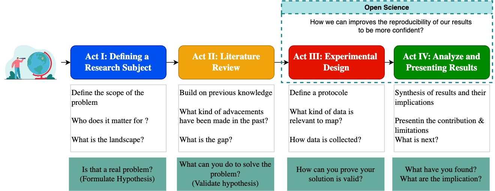
Research conceptualization
Rules of the game
- Each session there will be a TD to be putted on ARCHE.
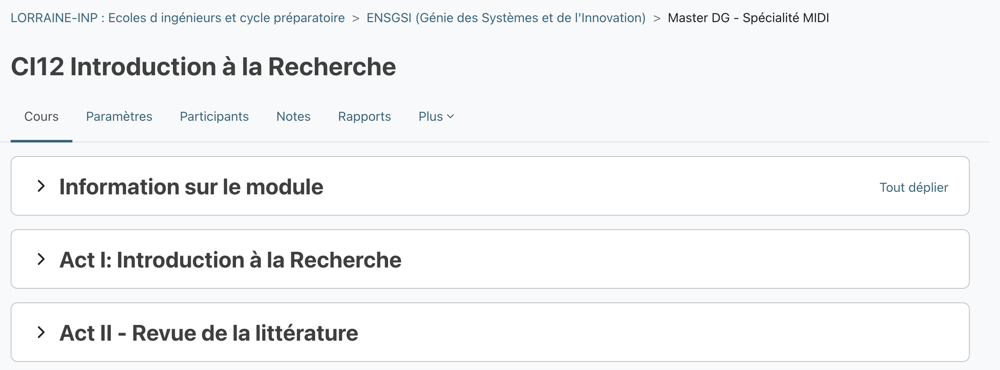
Note finale = \(Moyenne\)
- Research Seminar* (May 2026) – (Double Degree)
Article of State of the Art about your Internship (7 pages – Before Seminar) .
- Title
- Abstract
- Résumé en Anglais / Français
- Context, Problem, Research Question, Methodology and Expected Results (7 pages)
- References
Cross-peer revision
People
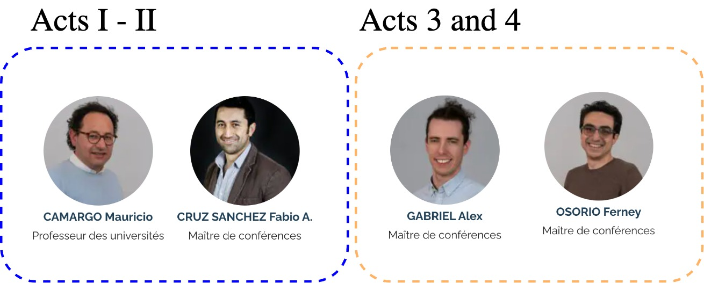
Fabio A. Cruz Sanchez
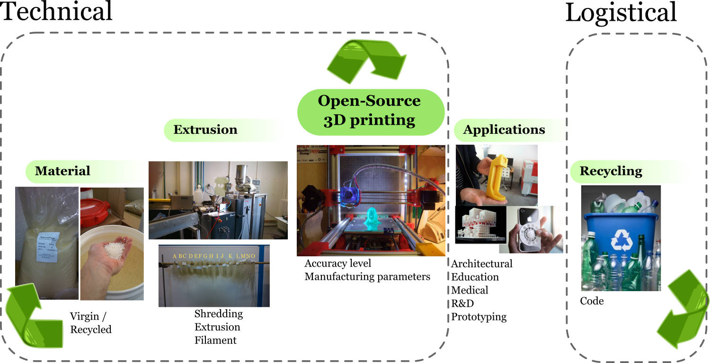
Introduction to the Scientific Research
Pedagogy and Recherche Perspectives

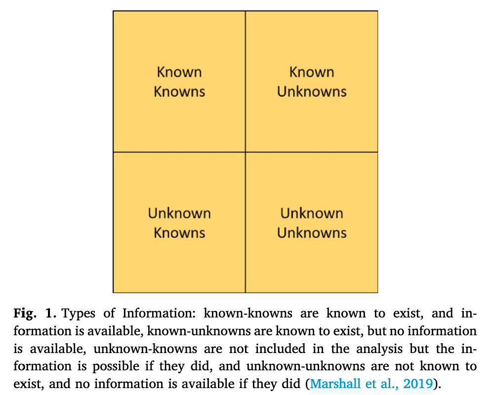
What are the difference between
Engineering and Research (in Innovation) ?
Engineering vs Research (in Innovation)
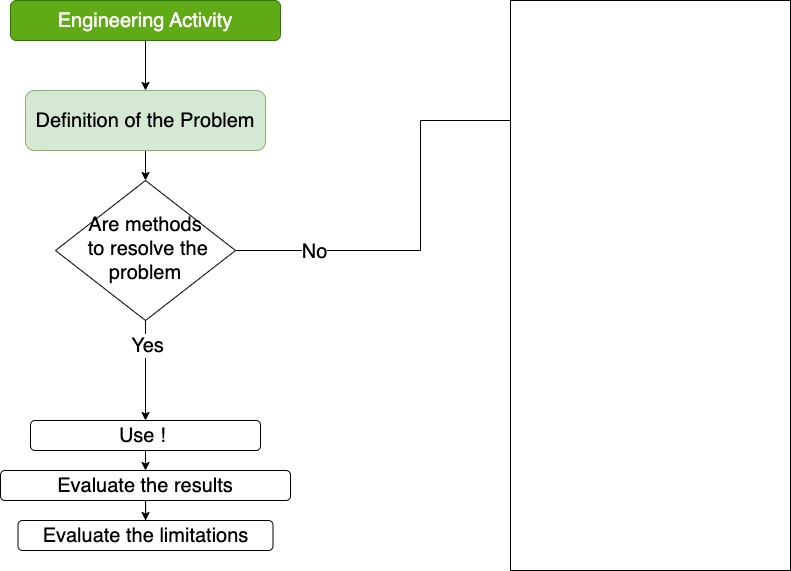
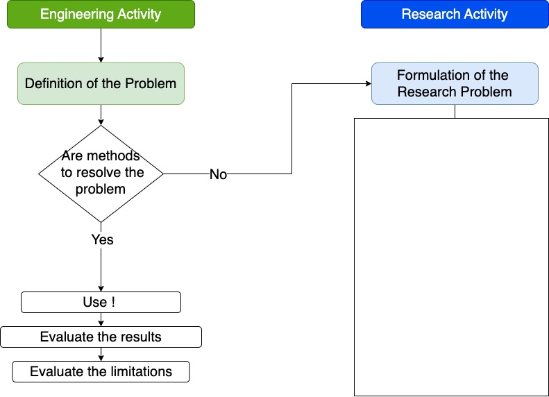
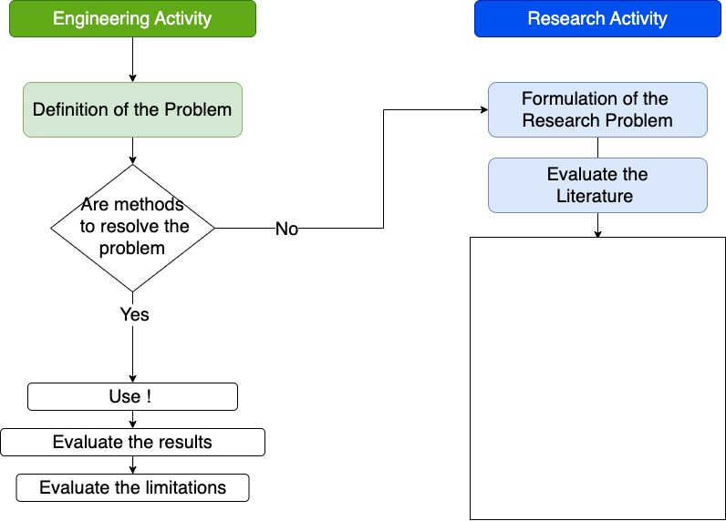
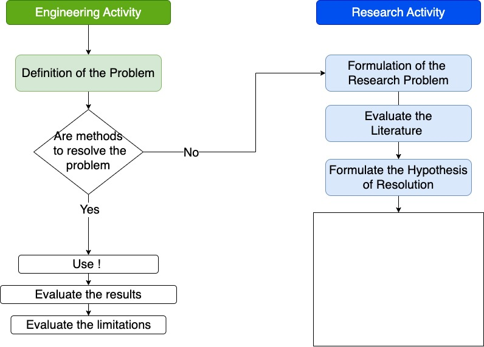
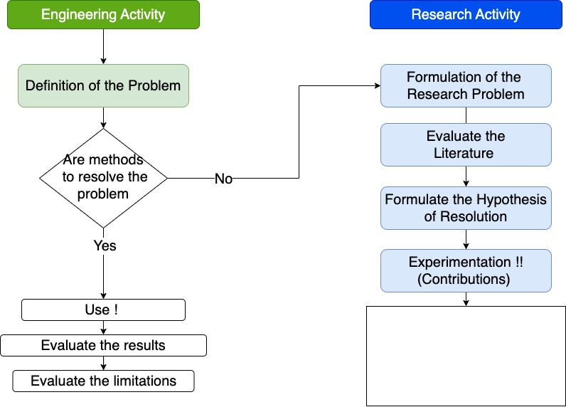
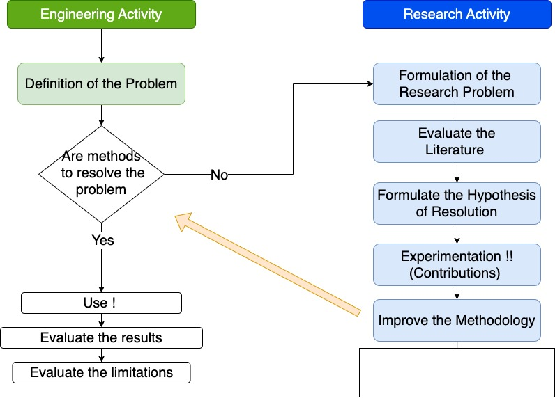
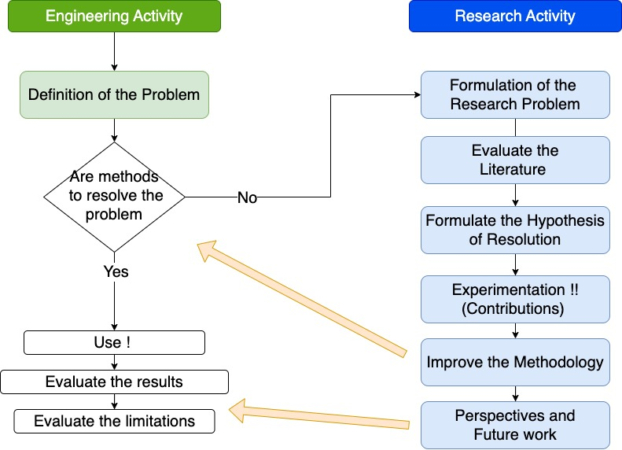
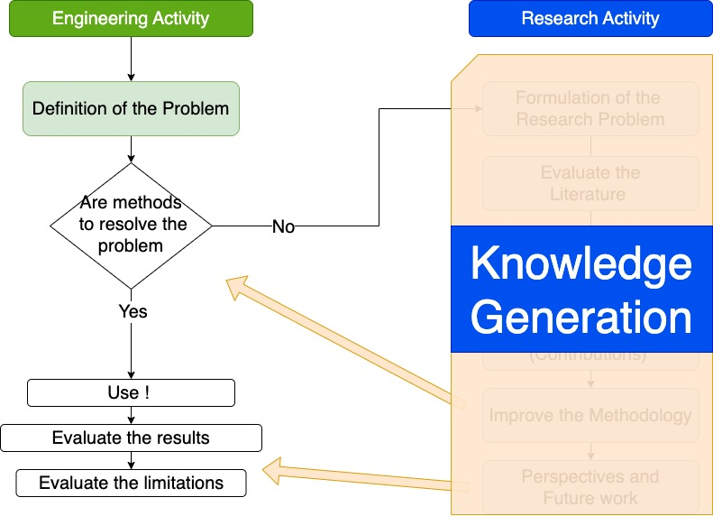
What is scientific research ?
The process of finding solutions to a problem after a thorough study and analysis of the situational factors.
Based on two research elements:
- 🔎 Observations (information or data)
- 💡 Theory (arguments)
Source: Saunders, M.N.K., Lewis, P., Thornhill, A., 2019.
Research methods for business students, Eighth Edition. ed. Pearson, New York.
Types of research
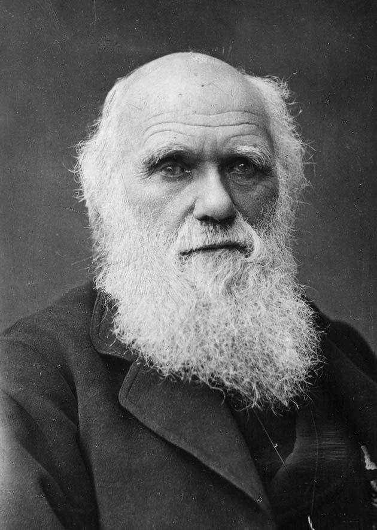
Photos courtesy of Wikipedia
Inductive vs Deductive Research ?
Scientific approaches
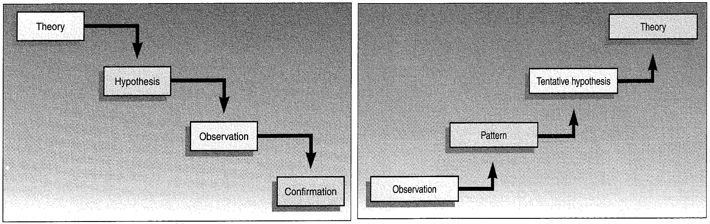
Scientific approaches
Deduction
la méthode par laquelle on va de la cause aux effets, du principe aux conséquences, du général au particulier.
Induction
La règle découle de l’observation répétée de faits réels, contingents.
Mental model for the course?
Research conceptualization
Mental model for today
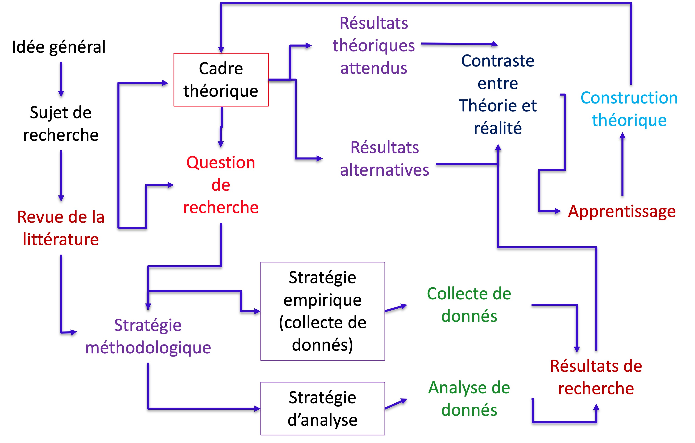

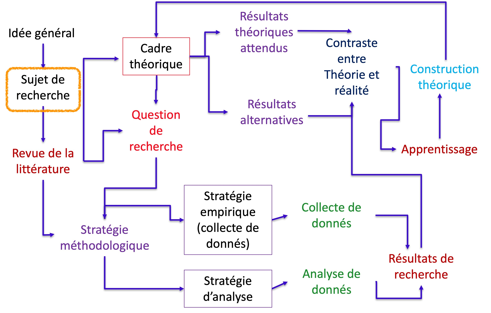
but before…
Let’s connect the dots
For you,
Scientific Research ?
Is it important?
Introduction à la Recherche Scientifique en Innovation
5 Questions:
- L’innovation technologique, crée-t-elle plus de problèmes qu’elle n’en résout ?
- Les grandes innovations sont-elles le fruit du génie individuel ?
- La recherche en innovation doit-elle viser la vérité scientifique ou la croissance économique?
- La recherche en innovation est-elle éthiquement Neutre, Autonome et Objective ?
- Dans quelle mesure pensez-vous que la recherche vous est utile ? (ou pas ?)
Steps:
- 📝 Individual reflection. 8min ⏳
- 💬 Rotation and Shared discussion. 6min ⏳
- 💬 Connect the dots. 8min ⏳
- 📢 Restitution to all. 3min ⏱️
Group 1
- AFFLELOU Joss\(^*\)
- BOUICHICHI Samir\(^*\)
- DESCHUYTENEER Cyril
- FUMOUX Mathilde
- GONTIER Celia
- MACIEL SILVA Fernanda
- PERRIN Ines
- RENOUX Amaury
- TOURKI Habib
Group 2
- MICHEL Marilou\(^*\)
- SCHEFTEL Theo\(^*\)
- AGUADO Zoe
- CAPDEVILA Romane
- DINE Robin
- GAGNIE Lola
- GOYTINO Audrey
- RABAH Flania
Group 3
- ALHON Jeremy\(^*\)
- GAU Romane\(^*\)
- CIOBANU Dorin
- FIDALGO Duarte
- HANNA Marie
- MINAFRA Maria Clara
- RAZAFINDRAMANANA Benjamin
- SCHILLING Antonin
Groupe 4
- BEAUCAILLOU Maelle\(^*\)
- DAGUIER Arthus\(^*\)
- FIOL Alexis
- GAURIER Emmanuel
- HENRY Lola
- NOEL Arthur
- REMY Matteo
- SOULIE Arnaud
Groupe 5
- BOTTIN Camille\(^*\)
- HOERNER Maxime\(^*\)
- DE LA PENA Maria
- FRICKER Arthur
- GOBAILLE Jean
- PEE DIT GRABET Pierre
- RENAUDIN Rayan
- THOMAS Marceau
- VERNET Victor
\(^*\): Hôte de table, si vous êtes d’accord?
Restitution
5 Questions:
- L’innovation technologique, crée-t-elle plus de problèmes qu’elle n’en résout ?
- Les grandes innovations sont-elles le fruit du génie individuel ?
- La recherche en innovation doit-elle viser la vérité scientifique ou la croissance économique?
- La recherche en innovation est-elle éthiquement Neutre, Autonome et Objective ?
- Dans quelle mesure pensez-vous que la recherche vous est utile ? (ou pas ?)
Why bother to study the scientific research?
Why should I learn about the search process?
Research and the “Managers”
🥼 To work as a researcher (PhD., R&D Department)
🗣️ To become a pertinent intelocutor at your company
⚖️ Help to make evidence-based decisions: e.g. Public politics
🔮 Help in the strategic and future decision-making
As an Innovation Manager you are going to face problems that your R&D department or/and external researcher (open-innovation) can help you to solve.
Why a company would bother with scientific research ?
Technology Readiness → Maturity
The industrial emergence mapping framework.
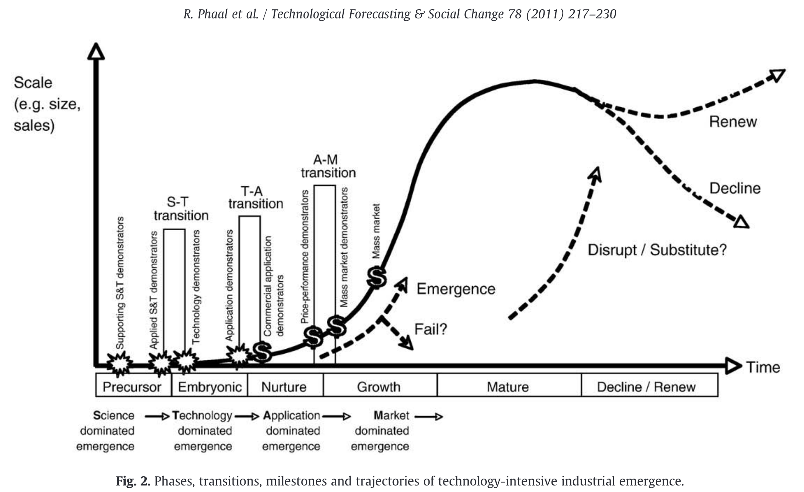
Phaal, R., O’Sullivan, E., Routley, M., Ford, S., Probert, D., 2011. A framework for mapping industrial emergence.
Technological Forecasting and Social Change 78, 217–230.
On the case of Entreprise
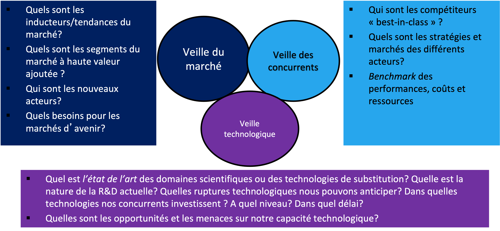
Technology Readiness → Levels
Framework developed in the Aeronautical field.

Technology Readiness → The Valley of Death

Technology Readiness → Challenges TRL4 - TRL7

Technology Readiness → Challenges TRL4 - TRL7
- There is a lack of tools that can provide insights into technology-integration issues at an early R&D phase (TRL 1-5).
- This results in a mismatch between information need and availability and complicates decision-making.
- The process requires an interdisciplinary approach. The right combination of skills and expertise may not always be available
Technology Readiness → Evolution
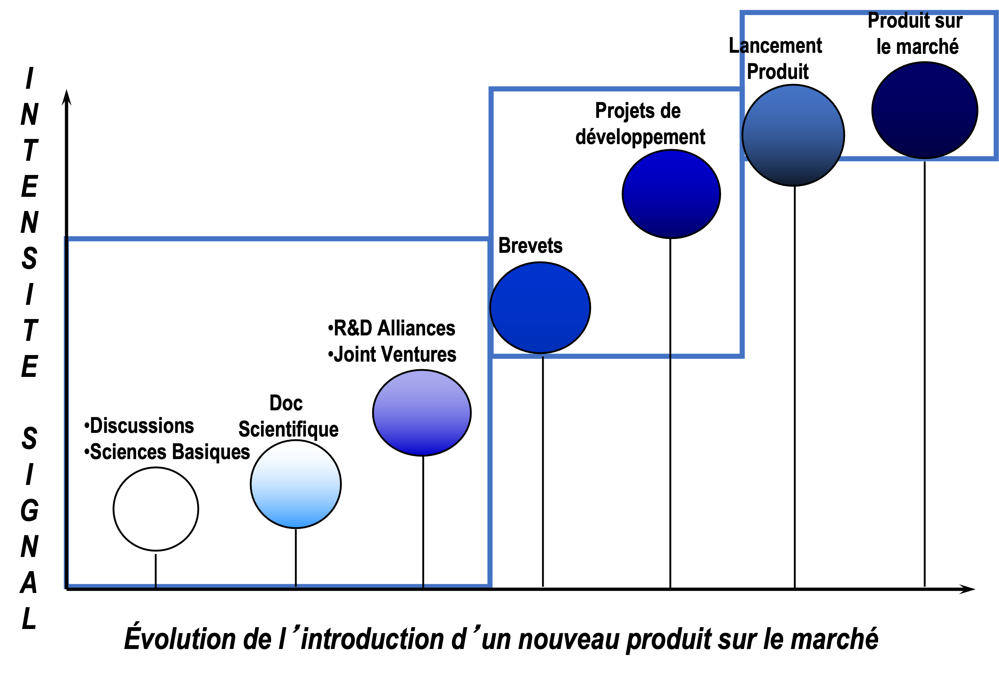
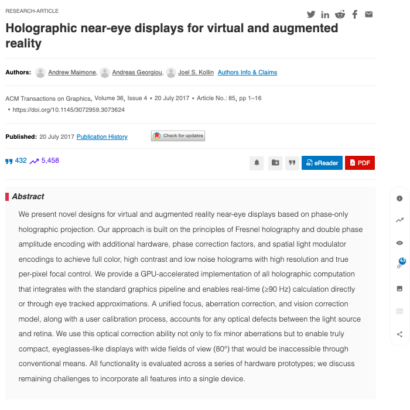

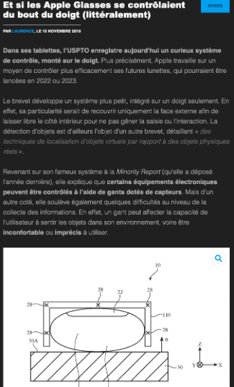
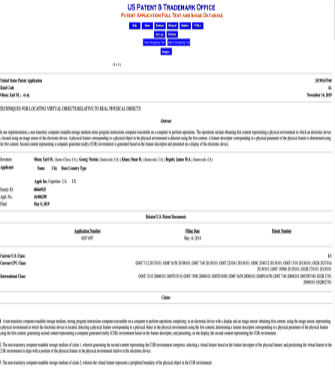
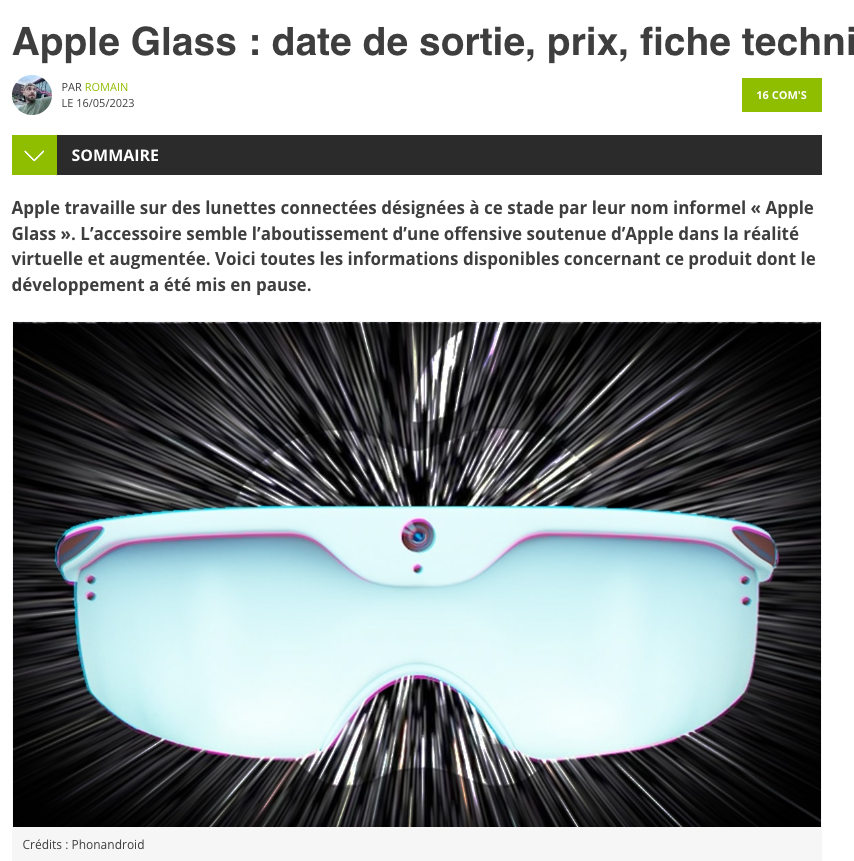
How to be a relevant interlocuteur?
Understanding the ecosystems of the scientific research
The perspectives of the Scientific Research
Process Perspective
Source: Pandey, S., Pattnaik, P., 2015.
University Research Ecosystem: A Conceptual Understanding.
Review of Economic and Business Studies 8.
Stakeholder Perspective
Source: Pandey, S., Pattnaik, P., 2015.
University Research Ecosystem: A Conceptual Understanding.
Review of Economic and Business Studies 8.
Scientific Documents & Databases
What the difference these two googles?

Google Scholar Vs Google Traditional
Peer Reviewing process
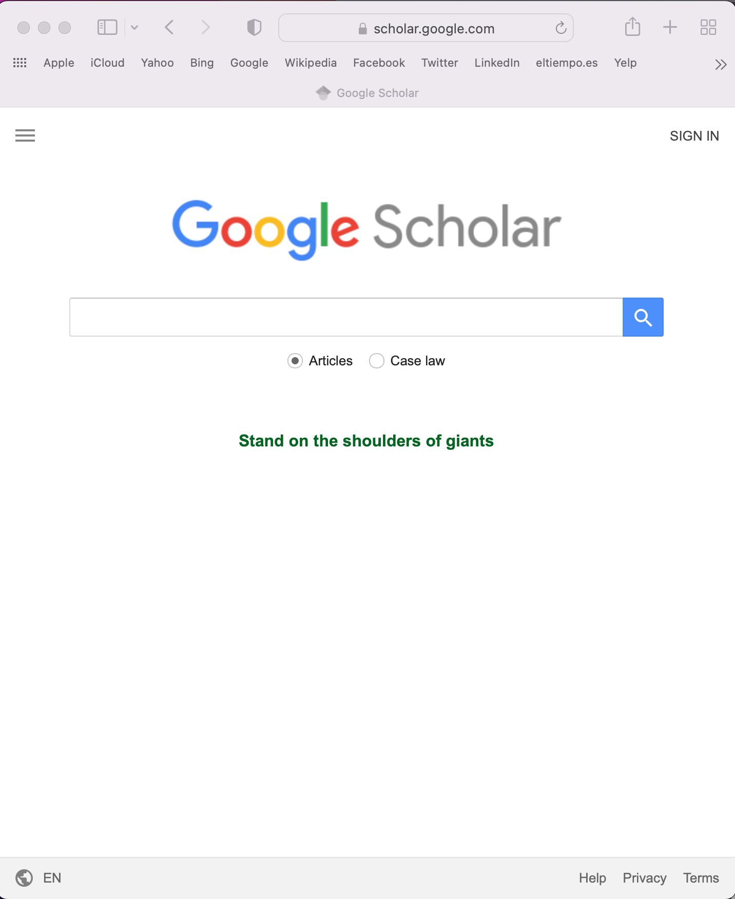
Google Scholar Vs Google Traditional
Scientific Databases
At the ENT Ul > Ressources en Ligne
- Scientific databases
- Research papers
- Books
- Institutional reports → WHO, EU …
- Societies
- Conferences proceedings (IEEE, IAMOT, IFAC…)
- Institutional repositories → dissertations
- IP registrars → Patents
🦸♂🦸🏻♀️ Standing on the shoulders of giants!!
Web of science → Scientific & Patent databases
Scientific Articles

Patents database
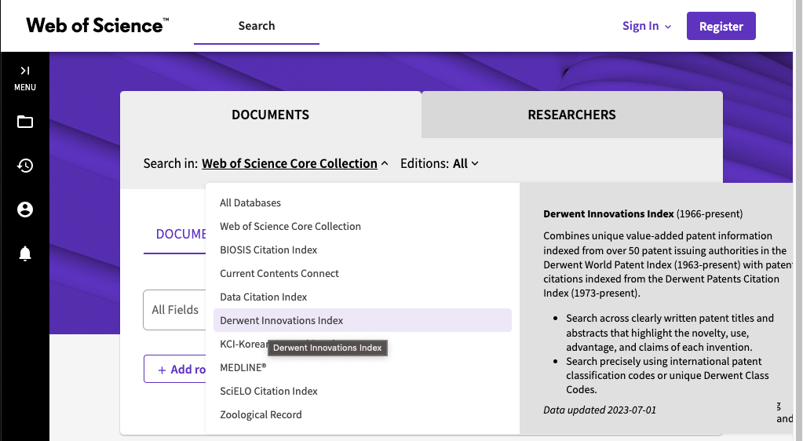
OpenAlex - https://openalex.org/
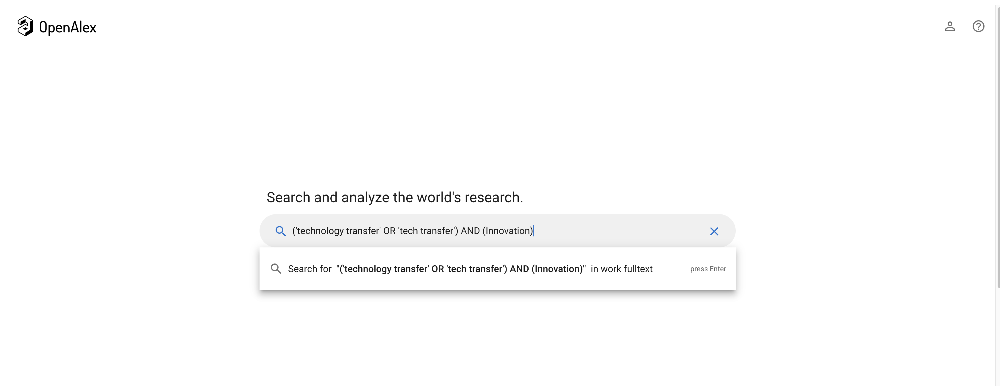
Open Source Science 🔓
Offers a replacement for industry-standard scientific knowledge bases like Elsevier’s Scopus and Clarivate’s Web of Science ❗
Funding Agencies (EU, National, Regional, Local)
Research funding bodies play a crucial role in shaping the landscape of scientific research.
Key Roles and Functions
- Prioritization and Quality Assessment
- Promoting Research Integrity
- Facilitating Interdisciplinary Research
- Influence on Collaboration Networks
Barriers
- Partnership Challenges
- Assessment Practices
- Conservative Policies

The Research Institutions
Public authority responsible for evaluating all higher education and research structures.
ERPI Laboratory UL
The Researcher(s)
Public authority responsible for evaluating all Researches.
Conseil national des universités
Bibliometric Analysis
Donthu, N., Kumar, S., Mukherjee, D., Pandey, N., Lim, W.M., 2021.
How to conduct a bibliometric analysis: An overview and guidelines.
Journal of Business Research 133, 285–296. https://doi.org/10.1016/j.jbusres.2021.04.070
What is a Bibliometric Analysis?
A popular and rigorous method for exploring and analyzing large volumes of scientific data. It enables us to unpack the evolutionary nuances of a specific field, while shedding light on the emerging areas in that field.
The
Bibliometric
toolbox
The Bibliometric
toolbox
Techniques
- Performance: Examines the contributions of research constitutiens to a given field.
- Science Mapping: Examines the Relationships among the research constitutiens to a given field.
The Bibliometric
toolbox
Performance Techniques
Quantity of:
- Documents
- Authors
- Productivity
Real question is:
Is this subject interest for scientific community? 🧐
Quantitative Description !!
The Bibliometric
toolbox
Citation-related metrics
Quantity of:
Real question is:
Have this subject an Impact and diffusion of knowledge in the community? 🧐
⛔️ Although their relationship with research quality is complex and multifaceted issue.
The Bibliometric
toolbox
Citation-publication
related metrics
Quantity of:
- Collaborations
- Citations
- ‘Impact factors’:
- h-index
- g-index
- i-index
Real question is:
How this research is made? 🧐
What is its statistical distribution?📊
How many ‘big fish’ documents ? 🐋
The Bibliometric
toolbox
Techniques
- Performance: Examines the contributions of research constitutiens to a given field.
- Science Mapping: Examines the Relationships among the research constitutiens to a given field.
Qualitative Description !!
The Bibliometric
toolbox
Citation Analysis
Relationship of documents based on:
- Citations
The Bibliometric
toolbox
Co-citation
- Publications that are cited together
frequently are similar thematically
The Bibliometric
toolbox
Bibliographic coupling
- Two publications sharing common references are
also similar in their content
The Bibliometric
toolbox
Co-word Analysis
Co-citation analysis (Past) → Bibliographic coupling (Present) → and Co-word Analysis (Future)
The Bibliometric
toolbox
Co-authorship analysis
- Interactions among scholars (Universities, Countries) in a research field.
- Co-authorship is a formal way of intellectual collaboration.
- Collaborations across different periods of time
- Valuable information to reach out and collaborate with established and trending scholars
Real question is:
Who researcher / University / Country is the best placed in a particular topic? 🧐
Your Turn for Conceptualize your research !
Two options:
Presentation of TD
Mental model of the Research conceptualization
Theoretical background
- Scientific databases
- Methodological Support : Bibliometric Analysis
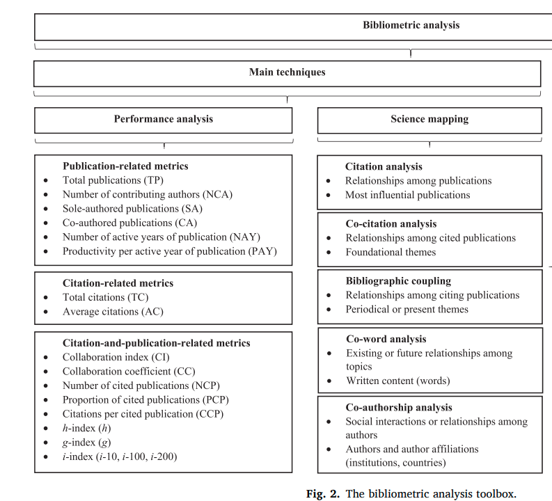
Source: Donthu, N., Kumar, S., Mukherjee, D., Pandey, N., Lim, W.M., 2021.
How to conduct a bibliometric analysis: An overview and guidelines.
Journal of Business Research 133, 285–296.
The Exercises
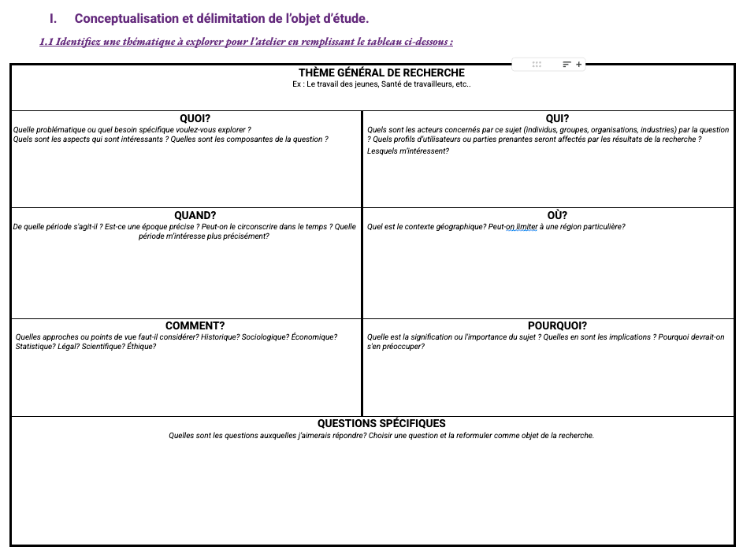
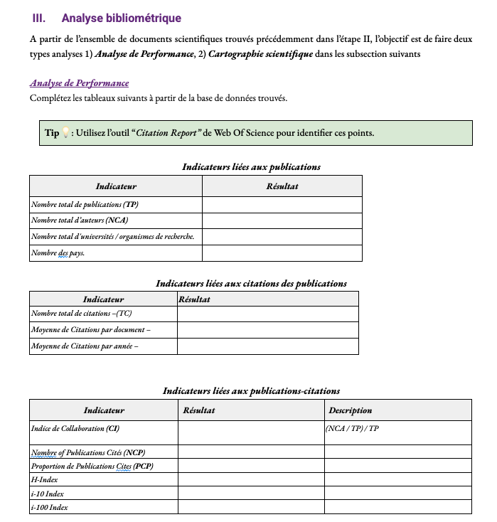
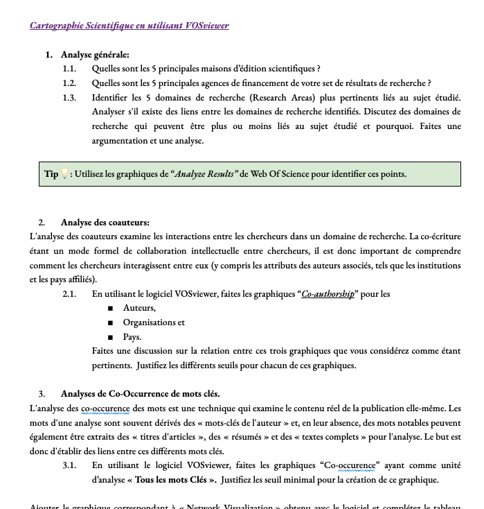
Bibliometric mapping: Vosviewer
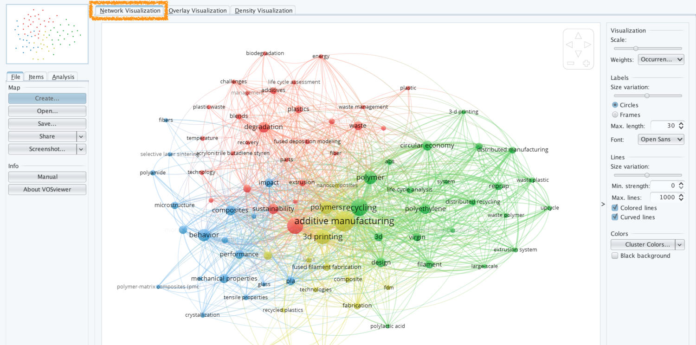
Thank you
Everything start with a good research question !
Everything start with a good research question
1 Descriptive (What, When, Where, Who or How)
e.g. What percentageof coachees report that coaching helped them with a problem they experienced
2 Explanatory (Why?)
e.g. Why dis 65% of coachees report that coacing helped them with a problem they experienced? this
Good research question: Descriptive & Explanatory
Being able to provide meaningful explanations requires answers to why (i.e. explanatory) questions in addition to what (i.e. descriptive) questions.
For example:
- ‘How effective is the coaching process at helping coachees to solve a problem they experience and what are the reasons for this?’
- ‘To what extent is the coaching process effective at helping coachees solve a problem and why?’
PICOC Framework
| Parameter | Meaning |
|---|---|
| Population | The What or Who in which the evidence is collected, |
| Intervention | The how applied in the empirical study |
| Comparison | In which the intervention is compared to |
| Outcomes | What you expect to observe |
| Context | In which particular environment of the population, including whether it is conducted in academia or industry |
PICOC Framework: Example 1
Research question
What are the benefits and limitations of using the Semantic Web and Linked data LD technologies for developing product data templates for information ex-changes between the building and lighting product manufacturing industries in comparison with the conventional approach of information exchanges using the openBIM standards?
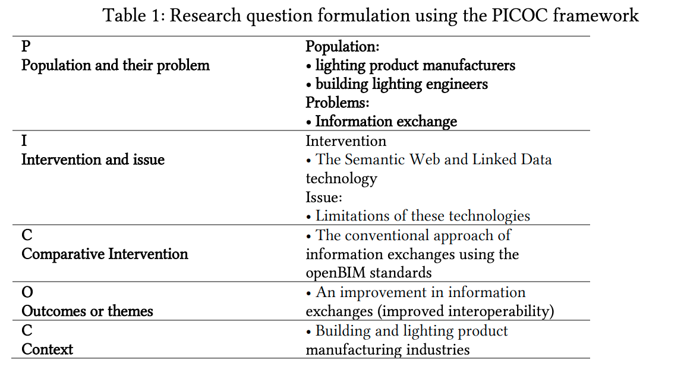
Source: R Kebede, A Moscati, P Johansson, H Tan (2020).
Semantic Web and Linked Data for Information Exchange between the Building and Product Manufacturing Industries: A Literature Review.
Proceedings of the 37th International Conference of CIB W78, Sao Paulo - online, BR, 18-20 August, pp. 248-265 (ISSN: 2706-6568),
PICOC Framework: Example 2
Research question
- What is the state-of-the-art in MES?
- Which MES types had the highest and the least number of studies?
- Which modeling approaches are common to assess MES? ….
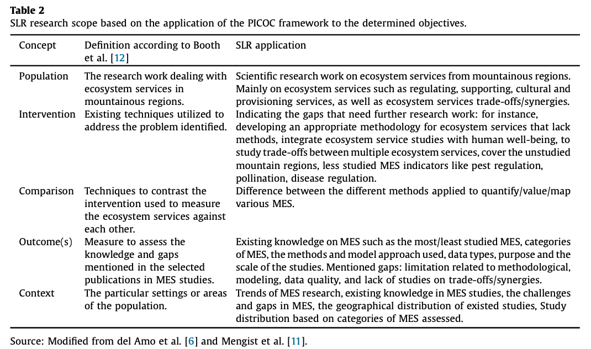
Source: Mengist, Wondimagegn, Teshome Soromessa, and Gudina Legese.
Method for conducting systematic literature review and meta-analysis for environmental science research.
MethodsX 7 (2020): 100777.
Thanks for your Atenttion


Introduction to Scientific Research